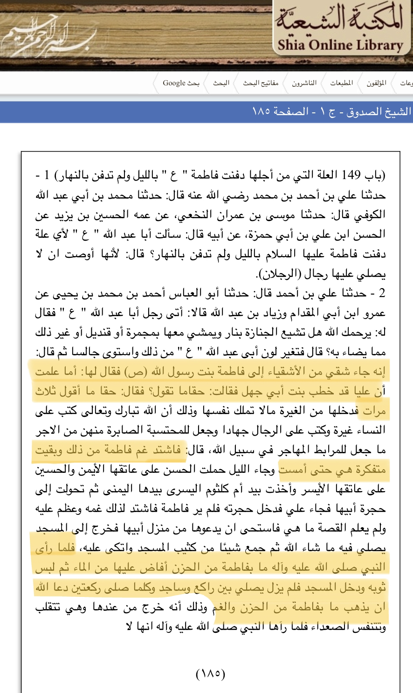
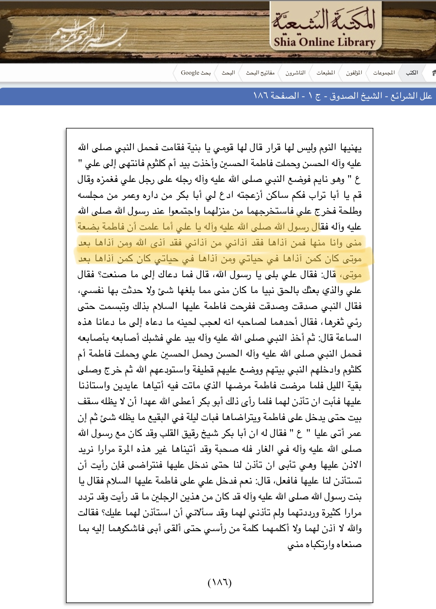
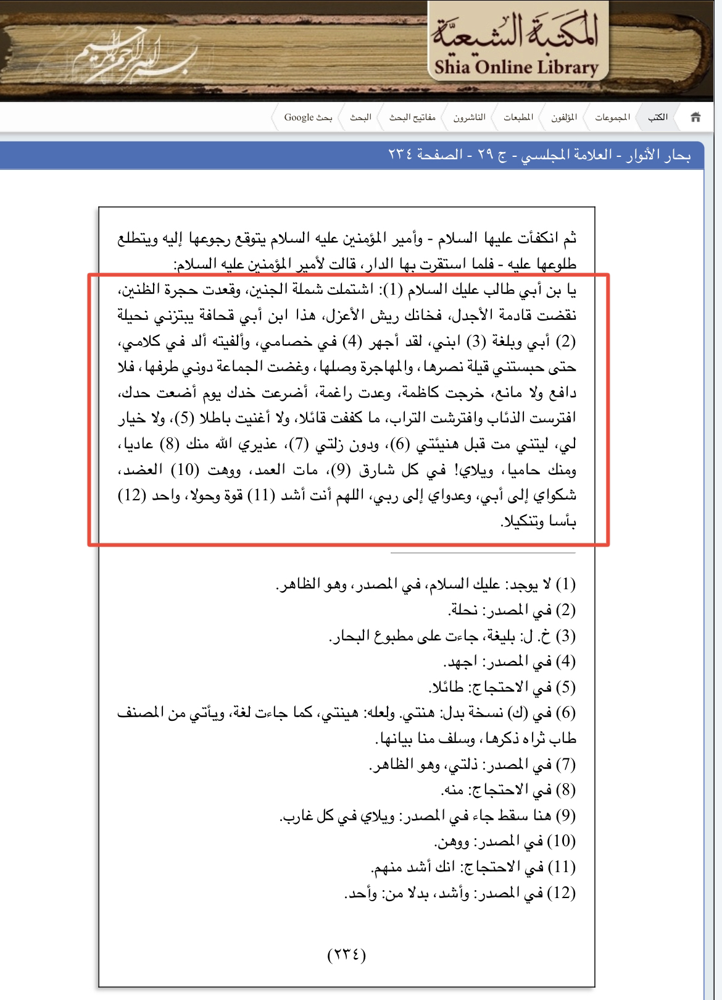
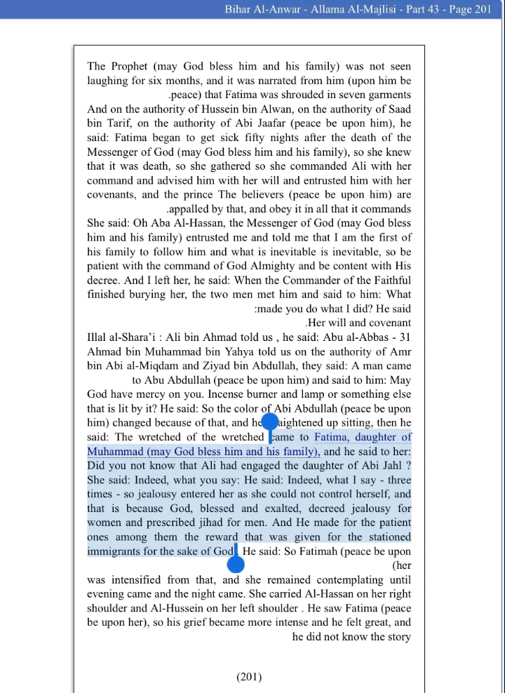
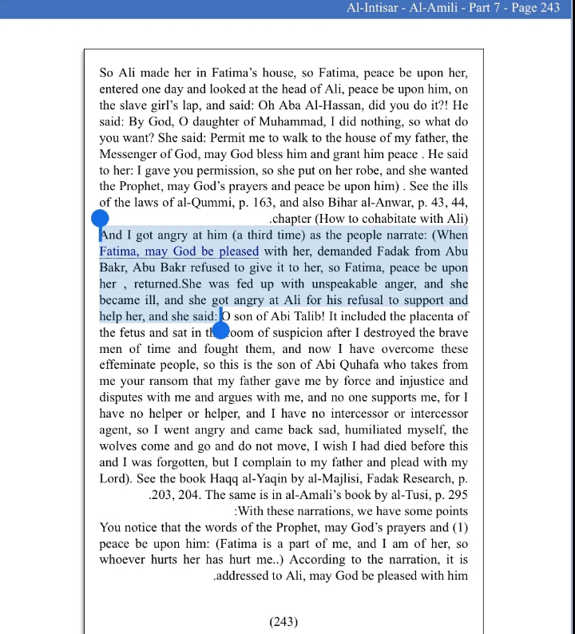

Now let me present you some of the Shia sources that says that Fatima RA was angry with Ali RA



The aim of the argument is just to show those who put so much effort in saying that Fatima once got angry at Abu Bakr,
hence Abu Bakr has angered the Prophet as per the hadith , we say if it means in every right or wrong matter,
than do think about these narrations too.

